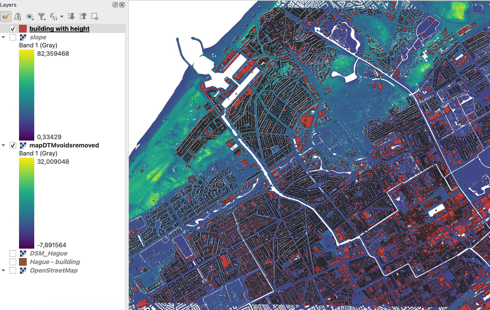

DTM map

A map looking at the different classes of land usage in Barcelona.

For this assignment, we had 2 different options, and I chose to do the 3d urban model with flood analysis since I thought it would be really cool to make a 3d map. My ROI (Region of interest) is the Hague. I chose it because it is very close to water and is at risk of potential flooding if the water management systems failed, thus I was interested in seeing how it would manage with a couple meters of water. The area is approximately 15 km2.
The results were not that surprising, at 3 meters the city gets flooded in a most of its urban places, but some places remain dry. As I experimented with analysing flooding at higher levels of water, I noticed that after about 15m there was no change, thus most of the city is likely underwater at that point.
This project was especially challenging for me at times, as it tested my patience a lot. In the begining everything went smoothly, but then I came across a step in the tutorial that was not showing up the same in my QGIS app, so that was very frustrating as I could not find how to do it anywhere. However, I came back to the project the next day and figured out another way to complete the step and persevere with the project. However, an even bigger and more frustrating problem arose after I was done with the whole thing and I was supposed to use a pluggin to export it. During this step I faced so many issues, since I have a macos and the program does not run smoothly on it, and eventually I gave up. In the end a claamate showed me how to do an animation in QGIS, which was very helpful, even though it lags quite a bit and is not in the best quality.